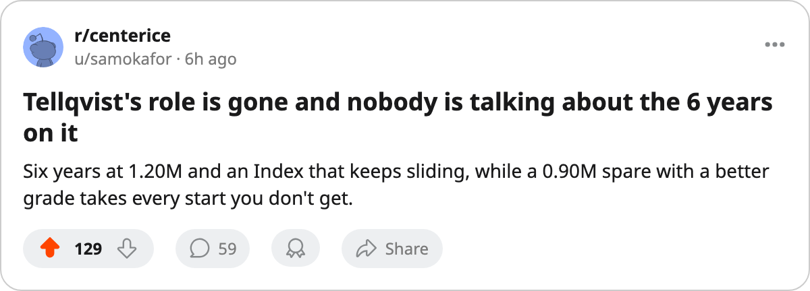

TOR
TORGoalie Room: Luongo's starts climb to 11, his morale sits at 79, and 1 contract year remains
Tellqvist started 0 of the last 5 while Luongo and Ouellet split them. The 6-year, $1.20M man is disappearing from the committee.
 Sam OkaforLeafs beat reporter · Queen City Telegram
Sam OkaforLeafs beat reporter · Queen City Telegram
At the last check on November 27, the goaltending committee was  Roberto Luongo95 with 8 starts, Mikael Tellqvist73 with 8, and Maxime Ouellet86 with 6. Five games later, the split is 11-8-8. Luongo added 3 starts in 5 games. Ouellet added 2. Tellqvist added none.
Roberto Luongo95 with 8 starts, Mikael Tellqvist73 with 8, and Maxime Ouellet86 with 6. Five games later, the split is 11-8-8. Luongo added 3 starts in 5 games. Ouellet added 2. Tellqvist added none.
Roberto Luongo has started 11 of 27 games. His overall grade of 94 is the highest on the roster, and the Bureau's Development Index has him at the base with no form movement, so he is playing exactly where the Book expects. The Conn Smythe and Jennings trophies from last spring sit on his shelf. His morale reads 79, tied with  Jason Spezza73 and
Jason Spezza73 and  Bryan McCabe84 for the lowest on the active roster.
Bryan McCabe84 for the lowest on the active roster.
His contract expires in 1 year. The salary is $1.60M.
Tellqvist is sliding
Mikael Tellqvist carried 8 starts through the first 22 games. He has started none of the next 5. The Bureau's Development Index has him at -5 form: base 77, current overall 73. That's the steepest faller on the entire roster. His contract runs 6 more years at $1.20M.
The 8-6-8 committee from late November has become an 11-8-8. The distribution matters more than the totals. Ouellet, undressed on the depth chart but carrying 8 starts, has an overall of 86 and morale of 97. He is 1 year from free agency at $0.90M. The coach keeps choosing him over the man with 6 years and a higher salary attached.
| Goaltender | Starts | Overall | Index form | Morale | Salary | Years left |
|---|---|---|---|---|---|---|
| Luongo | 11 | 94 | 0 | 79 | $1.60M | 1 |
| Ouellet | 8 | 86 | 0 | 97 | $0.90M | 1 |
| Tellqvist | 8 | 73 | -5 | 94 | $1.20M | 6 |
The workload question
Luongo faced 31 shots from New Jersey on Thursday and stopped all but 3. That's his 11th start in 27 games, a pace that projects to roughly 32 by season's end. Last spring he carried the team through 24 playoff games. He is 26 years old, the best netminder on the roster by 8 grade points, and the second-lowest morale on the active roster.
The $1.20M problem the desk named in November has not been solved. It has been avoided. Tellqvist's Index is dropping, his starts have stopped, and 6 years of salary sit on the books while Ouellet takes his starts at half the cost and 13 grade points higher. Whether that's a development decision or a roster-management problem, the sheet doesn't say.
